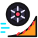

Stunt Wheel
A tiny pixel-art wheel races along the bottom of your stream on a track that never ends. It hits boost pads, flies off ramps, bounces on springs and spins through loop-the-loops. The track builds itself as it goes, so no two runs are the same.
Live demo
This is the real overlay, live. The wheel rolls in from the left, then the track scrolls along with it.
Setup guide
Get it on stream
-
Add a Browser source
In OBS click + under Sources → Browser. Paste
https://race.ixitxachitl.com/as the URL. -
Make it a strip
Set Width to your canvas width, like
1920, and Height to288. That's the height of the track at the default size. - Put it along the bottom Drag the source to the bottom edge of your scene and to the top of the source list, so the wheel races in front of your game. The background is already transparent in OBS.
- Let it roll That's it. There's nothing to log in to and no settings panel. Make the pixels chunkier or the wheel faster with a setup link if you like.
What you'll see
- Rolling hills and bumpy stretches that the wheel can catch a little air off.
- Striped ramps that launch it over gaps. It always makes the jump.
- Glowing blue boost pads that send it zooming with a speed trail.
- Green spring pads that bounce it high into the air.
- Full loop-the-loops, with a boost pad just before each one.
Tips
- The track always sits at the bottom of the source. If you make the source taller it still works, you just get empty space above it.
- The track is as wide as the source. A narrower source makes a shorter stretch of track, which works well in a corner.
-
If you change
scaleorrows, set the source's Height to rows × scale so nothing gets cut off.
Options
Build a setup link
URL parameters
| Parameter | Default | What it does |
|---|---|---|
scale |
4 | How big each pixel is on screen. Bigger means chunkier pixels and a bigger wheel. |
rows |
72 | How tall the track strip is, in pixels before scaling (at least 40). The strip is rows × scale tall on screen. |
speed |
1 | Multiplies how fast everything runs. 0.5 is half speed, 2 is double. |
bg |
auto |
In a normal browser the overlay shows a dark background so you can see it. Set
bg=none to make it transparent anyway, or give it a color like
bg=black. In OBS it's always transparent unless you set a color.
|